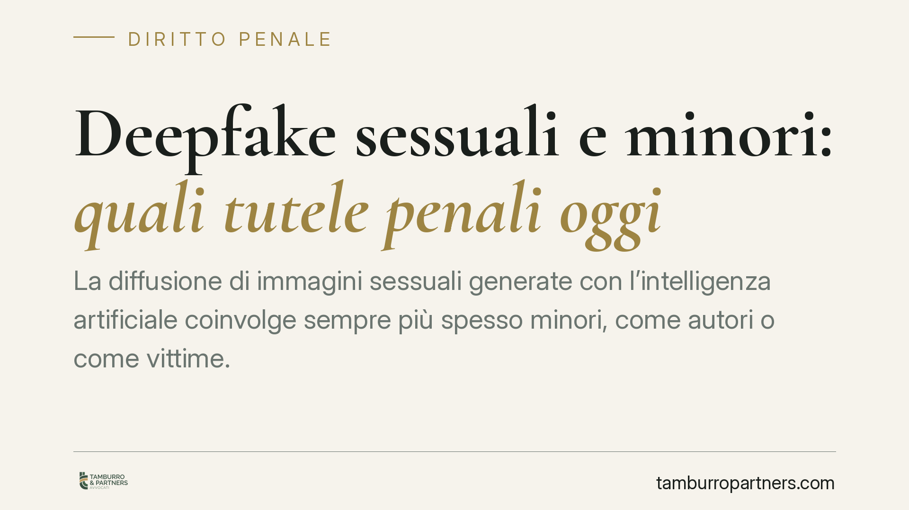

Deepfake sessuali e minori: quali tutele penali oggi
La diffusione di immagini sessuali generate con l'intelligenza artificiale coinvolge sempre più spesso minori, come autori o come vittime. Il quadro normativo italiano non è privo di strumenti, ma presenta zone d'ombra sui contenuti totalmente sintetici. Facciamo il punto sulle norme effettivamente vigenti, senza anticipare riforme non ancora certe.

Il fatto e perché conta
I cosiddetti *deepfake sessuali* sono immagini o video in cui il volto di una persona reale viene sovrapposto, tramite intelligenza artificiale, a contenuti a sfondo sessuale. Il fenomeno è in crescita tra adolescenti e solleva un doppio problema: quali reati configura oggi e come si atteggia la responsabilità quando gli autori sono minorenni.
Una premessa di metodo. Circolano in questi mesi riferimenti a un presunto "art. 612-quater c.p." e a decreti di prossima entrata in vigore. Allo stato non risultano confermati su fonti ufficiali (Gazzetta Ufficiale, Normattiva) una fattispecie con quel numero e quel contenuto, né una data certa di vigore. Per rigore, in questo contributo trattiamo soltanto le norme effettivamente in vigore. Sulle proposte di riforma torneremo quando saranno pubblicate.
Inquadramento normativo
Il riferimento centrale, oggi, è l'art. 612-ter c.p. (diffusione illecita di immagini o video sessualmente espliciti, il cosiddetto *revenge porn*), introdotto dalla L. 69/2019. La norma punisce con la reclusione da uno a sei anni chi, senza consenso, invia o diffonde immagini o video a contenuto sessualmente esplicito, destinati a rimanere privati. Le pene aumentano se il fatto è commesso dal coniuge o dal partner, o attraverso strumenti informatici.
Il punto tecnico è che l'art. 612-ter è nato pensando a immagini autentiche. Sui contenuti interamente sintetici, in cui l'immagine sessuale non è mai esistita ma è costruita dall'IA, l'applicazione è discussa: la giurisprudenza valuta caso per caso, spesso valorizzando la riconoscibilità della vittima e il carattere diffamatorio o offensivo del contenuto. In queste ipotesi possono rilevare anche la diffamazione (art. 595 c.p.) e il trattamento illecito di dati (art. 167 D.lgs. 196/2003).
Quando la vittima è minorenne, il quadro cambia in modo netto. Trovano applicazione gli artt. 600-ter e 600-quater c.p. in materia di materiale pedopornografico: la produzione, diffusione o detenzione di immagini pedopornografiche è punita a prescindere dal fatto che l'immagine sia reale o realizzata con tecniche di elaborazione, dato che la nozione di pornografia minorile ricomprende anche le immagini virtuali (art. 600-quater.1 c.p.).
AI-Act: piano distinto, non penale
Il Reg. UE 2024/1689 (AI-Act) impone, all'art. 50, obblighi di trasparenza sui contenuti generati o manipolati artificialmente, che devono essere marcati come tali. È bene chiarire: si tratta di obblighi amministrativi europei rivolti ai fornitori e agli utilizzatori professionali di sistemi di IA. Non introducono nuovi reati nel codice penale italiano. La violazione dell'AI-Act non fonda, di per sé, una responsabilità penale interna: sono piani giuridici distinti. L'assenza di marcatura può però assumere rilievo probatorio in un procedimento penale già radicato su una fattispecie nazionale.
Implicazioni pratiche per famiglie ed enti
Sul fronte dei minori autori, va ricordato che l'imputabilità penale sussiste dai 14 anni (art. 98 c.p.). Al di sotto, il minore non è punibile, ma restano possibili misure del giudice minorile.
Sul piano civile, i genitori rispondono ai sensi dell'art. 2048 c.c. per i danni cagionati dal figlio minore convivente, salvo prova di non aver potuto impedire il fatto: prova che, sul digitale, passa anche dall'aver vigilato sull'uso degli strumenti e dall'aver educato al loro impiego corretto.
Per gli enti (scuole, associazioni, società), un'eventuale responsabilità ai sensi del D.lgs. 231/2001 presuppone che il reato commesso rientri nel catalogo dei reati presupposto. Va verificata di volta in volta l'inclusione della specifica fattispecie: non è un automatismo.
Cosa fare in concreto
- Cristallizzate le prove: salvate schermate, URL, date e orari, evitando di alterare i contenuti. Se possibile, fate certificare l'acquisizione.
- Segnalate il contenuto alla piattaforma per la rimozione e presentate segnalazione o denuncia alla Polizia Postale.
- Non diffondete il materiale, nemmeno per denunciarlo: la ricondivisione può integrare autonomo illecito.
- Rivolgetevi a un legale prima di prendere iniziative pubbliche o di contattare direttamente l'autore.
- Se coinvolge un minore, valutate subito la tutela in sede penale e civile, e informate la scuola secondo i protocolli antibullismo.
Consigliamo un approccio prudente: la materia è in evoluzione e conviene distinguere ciò che è già punibile da ciò che è solo annunciato.
Disclaimer
Contributo informativo a cura di Tamburro & Partners Avvocati. Non costituisce parere legale.
Ogni condominio ha una storia a sé.
Se gestisci un'amministrazione e vuoi un confronto su una specifica questione condominiale, scrivi allo studio. Ti rispondiamo entro un giorno lavorativo.